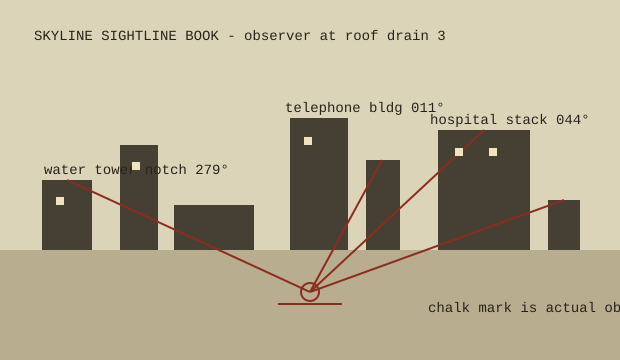

| Bearing | Sight | Use |
|---|---|---|
| 279° | water tower notch between two brick stacks | Aligns with west membrane seam and old stanchion shadow. |
| 011° | telephone building roofline, tall blank wall | Good reference for antenna mast C lean after high wind. |
| 044° | hospital stack with two white bands | Used by night crew: stack light visible when stair bulb is out. |
| 087° | low sawtooth warehouse edge | Marks the direction water runs when drain 2 is covered by leaves. |
Sightlines are clearest after rain. Heat shimmer from the roof makes the hospital stack look like it is walking; wait thirty seconds and average the sway.